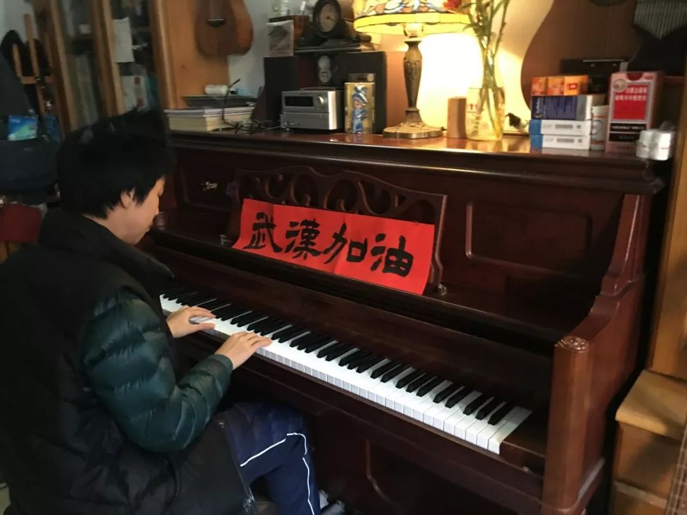
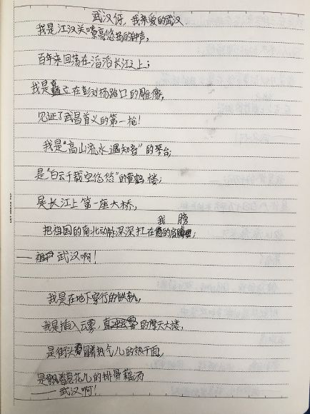

作家方方：武汉人爱武汉，爱得不由分说
原文链接 备份链接 _ _ _ _ 武汉这个地方，不南不北，所以他们会有北方人的蛮劲，也会有南方人的精明。喜欢过小日子。而且热爱武汉爱得不由分说，很多武汉人，是不容任何人说武汉一点不好的。 _ _ _ _ 记者 | …
我和子岚说，在这种黑暗的时候，哪怕一点点的善意，都能给别人带来温暖。哪怕只有一点点的光，也要努力去发出来，去照亮黑暗。
口述 | 余女士
整理 | 刘朝晖
我是子岚的妈妈，因为在快手上播出自己作为武汉市民日常抗疫生活的视频收获百万观看，子岚这个初三小男生一下子在网上“火”了，这让我实在没想到。
1月19日的晚上，我带着孩子去上了补习班，一起吃了宵夜，还和其他同学的家长聊天，讨论是不是带辛苦了一个学期的孩子出去旅游一次，然而大家就觉得形势有点不对。大家决定把补习的课停了，旅游计划也暂时搁置，互相提醒着囤点菜在家里，买一点口罩和消毒用品什么的。
一切来得猝不及防。1月23日早上起来，我从微博上看到武汉封城的消息，一下子挺慌的，因为从来没有经历过这样的事情。
子岚正在家里练琴，我跟他说：哎呀！怎么办呢？城市被封住了。子岚问我：妈妈，封城是什么意思？我说就是不能随便出去了。结果子岚说：封城有什么了不起的，封什么也封不住音乐！音乐是有力量的，封城封不住欢笑，封不住欢乐！
现在想想，子岚当时的这句话让我真的很感动,一直感动到现在。我一下子平静下来，没有那么慌了，觉得孩子长大了。
也许他是幼稚，是天真，但孩子这样勇敢，也给了我们大人勇气。我说，好，那爸爸妈妈就陪着你，我们一起试一试，看我们是不是真的可以挺过来。就这样，我们全家留在了武汉城里。
封城之后，很多亲朋好友，包括在国外的，都打来电话问我们的情况。我答复他们，我们就在家里弹弹琴，学习唱歌，还挺安生的。最重要的是家里没有人生病。好多人不相信，反复问是不是真的呀？后来我就说，我每天拍一段家里的生活视频给你们看看，让你们安安心吧。

子岚在家里练琴
我在快手上注册了一个账号，名字叫“我是子岚”。这是我第一次玩这种手机视频软件。第一天上传了一分钟的视频，主要就是子岚练琴和几张日常照片剪辑组合的。后来内容基本就是子岚练琴、练字、锻炼身体什么的，有时候上街买菜，街景也拍几张。每天上传发布一条，就像在拍一个封城日记，一直坚持到现在。
正月初一那天，我们在家稍微搞了点仪式，包个饺子，烤个甜品。打开手机一看，视频点击量居然上了百万，有几万个点赞。评论留言里，是全国各地以及武汉本地的网友在为我们加油，为武汉人民加油。这可能是我第一次感受到网络的力量有如此巨大。
我们宅在家里不能出去，但可以感受到很多很多的人的支持和鼓励。也许有人会说，这种口号支持是很空洞的，但是你如果真的在这个疫情的中心，你就会觉得就算那一点点鼓励，也是很宝贵的。

子岚通过练琴视频为武汉加油
子岚从小学音乐，这是他最大的兴趣爱好。什么钢琴、木吉他、电吉他都玩，有的时候还打鼓。在音乐上他还是有一点点天赋的，所以他觉得学习乐器没有那么枯燥，也并不困难，对他来说挺好玩的。现在他除了上网课，每天上午和下午都要练琴，差不多两三个小时。有空我们就陪着他，跟他一起弹啊唱啊，玩到一起。

子岚在做作业
子岚的视频在快手上火了之后，央视的编导打电话给我们，希望以我们的视频再添加点素材制作节目。2月11日晚上，《武汉：我的战“疫”日记》三集微纪录片在央视纪录频道播出，说的就是子岚和他同城“战友”们的故事。憨豆先生”扮演者罗温·艾金森。
为了向奋战在前线的医护人员，以及从四面八方支援武汉的叔叔阿姨们表达感谢，子岚专门和爸爸原创一首吉他曲献给他们。他在片子里说：“每天在新闻里看到这些人和物资，正源源不断地来到武汉，我们心里踏实多了。谢谢大家。”
央视纪录片《快乐的子岚》海报
片子播出后，亲戚朋友，还有子岚以前的小学老师打电话过来，说没有想到他一下子长得这么大了，印象里他还是一个小孩子。有人问，子岚现在变成“网红”了，你们有什么感想？其实我们和子岚一样，没什么太大感觉，他只是个14岁的初三学生，今后要走的路还长着呢。
子岚也觉得没什么值得炫耀的，他说，妈妈，我们快手的粉丝才一百多个，没什么了不起的。孩子就是孩子，那天片子播出时，他兴奋地对我说：妈妈你看，电视里有一个子岚，电视外有一个子岚，两个子岚，多好玩。

子岚在观看央视播出的纪录片
每天在快手上的记录分享，也让越来越多人走进子岚的生活。“加油孩子，你是最棒的。”“你们是未来的希望，好好学习是对那些帮你们的人最好的回报。”“一切都会好起来的，武汉和中国的明天一定会因你们而更加灿烂美好。”……网友一声声的支持和鼓励，让我们和子岚都对战胜疫情更加充满希望。
孩子和我们每天一起看新闻，每天会问我，今天确诊人数有多少了，今天有没有死亡的人？他会觉得这个数字有点夸张，很可怕。一开始，他可能还是处于一种天真的状态，有点盲目自信和盲目乐观，觉得无所谓。但是二十多天下来，他自己对这个形势有了更深入的认识。
我告诉他，那些数字曲线，和什么钢产量、粮食产量曲线不是一回事，后面是一个个的人和生命。我们虽然比较幸运，没有感染，但是有很多很多痛苦的人，需要去关怀，需要去支持。我和子岚说，在这种黑暗的时候，哪怕一点点的善意，都能给别人带来温暖。哪怕只有一点点的光，也要努力去发出来，去照亮黑暗。这一点一滴，都能坚定我们的信心。
那天我带他一起出去买菜，路上只有清洁工和交警。我跟子岚讲，街上没有人了，只有这些人还在这里坚持，我们应该跟他说一声辛苦了。子岚说，对，我们应该让他们一起加油！经过一名环卫工人时，我就喊：辛苦啊，师傅！虽然是我提议的，但我是个大人，对着陌生人这样喊出来感觉有点尴尬，声音特别小。但是子岚这个孩子很单纯，他真的上前大声地对那个环卫工喊：师傅加油！那个环卫工吓了一跳，等转过身来，虽然戴着口罩，但是看得出他特别高兴。
后来子岚遇到的每个环卫工、警察、小区门卫都大声喊：您辛苦了！他们有的笑一笑，或者是点个头，或者是伸出赞的手势，我觉得那种感觉特别好。对孩子来说，这也是一个很难得的成长经历。

子岚母子俩在阳光中的剪影
昨天的语文网课，老师布置了一道作业，是改写舒婷的一首诗《祖国啊，我亲爱的祖国》，把它改成《武汉啊，我亲爱的武汉》。上午十点钟下的课，说是到晚上交作业，结果子岚不到半个小时就写好了。他把作业拿给我看，一下子又把我给感动坏了。
我是江汉关嘹亮悠扬的钟声，
百年来回荡在滔滔长江之上。
我是矗立在彭刘杨路口的雕像，
见证了武昌首义的第一枪。
……


子岚的作文《武汉啊，我亲爱的武汉》
我觉得他写得太好了，我没有想到一个小孩子，对武汉的这些景物如此熟悉，有些地方他都没怎么去过，没想到他对武汉的感情是有这么深沉。
子岚其实作文写得不怎么好，但是这次是完全发自内心情感的写作。我很惊讶，孩子真的成熟了，长大了。我和子岚说，这是你自己的人生，你自己没有意识到，你已经深深地把根扎在这里了，跟这座城市已经不可分割了。

征集令
《新民周刊》现面向全国征集新冠肺炎采访对象和真实故事：
如果你是参与抗击新冠肺炎疫情的医护人员或其家属，我们希望聆听你的“战疫”故事，也希望传达你的诉求。
如果你是确诊、疑似患者本人或家属，我们希望了解你和家人如何“抗疫”的过程，让外界了解你的真实经历。
如果你是疫情严重地区的普通市民，我们希望展现你的乐观，并倾听你所需的帮助。
如果你是公共服务人员或各类捐助者，我们希望看到你的“最美逆行”，记录下你的无私。
……
抗击新冠肺炎疫情，我们诚征对疫情了解的社会各界人士，提供相关线索，说出你的故事，让我们用新闻留存这一切。
《新民周刊》新冠肺炎线索征集值班编辑联系方式（添加时请简要自我介绍）：
周一：应 琛 微信号：paulineying0127
周二：金 姬 微信号：gepetta
周三：黄 祺 微信号：shewen-2020
周四：周 洁 微信号：asyouasyou
周五：孔冰欣 微信号：kbx875055141
周六：吴 雪 微信号：shyshine1105
周日：姜浩峰 微信号：jianggeladandong
新闻是历史的底稿，你们是历史的见证者。
期待你的故事、你的线索！

▼
大家还都在看这些
▼
转载请在评论区留言，获得授权！
转载时，须注明作者、出处和微信号


原文链接 备份链接 _ _ _ _ 武汉这个地方，不南不北，所以他们会有北方人的蛮劲，也会有南方人的精明。喜欢过小日子。而且热爱武汉爱得不由分说，很多武汉人，是不容任何人说武汉一点不好的。 _ _ _ _ 记者 | …
原文链接 备份链接 _ _ _ _ 这几天，有媒体称“风月同天”不如“武汉加油”，后被群嘲。因为它背后的逻辑，并不是在讨论“灾难当头可否允许诗意停留”，而是把诗意直接当作非日常的存在，好像感风吟月都是特殊的情绪仪式，平日里不好随意散发的， …
原文链接 备份链接 *************▲*************新疆人何明荣本想晚点回家过年，不料遇上肺炎疫情，留下当起了志愿司机。 （受访者/图） 全文共3066字，阅读大约需要7分钟。 这件事对我们一家人影响都挺大的，我 …
原文链接 备份链接 各地民间对“武汉人”的恐惧和谩骂不忍卒读，恐惧是远比病毒更凶猛的疾病。 口述 | 黄 政 整理 | 金 姬 我是武汉人，毕业来上海已经十多年，在上海落户安家也已七年。因为我和妻子工作较忙，去年夏季开始我父母便从武汉来沪 …
原文链接 备份链接 有武汉人滞留在外地，就有外地人滞留在武汉。 1月23日凌晨，武汉宣布封城。 2月10日，湖北省以外的地区陆续开工，这让滞留在武汉的人更希望知道出城的日期。 恰值人口高峰流动期，没有数据统计滞留在武汉的人到底有多少。但各 …